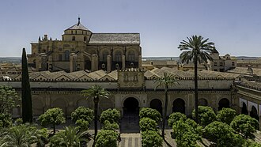
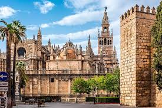

Famous places of Spain |
| Home | History | Places | Food |
| top 1 La Sagrada Familia (Barcelona) |
Designed by the famous architect Antoni Gaudí, the Sagrada Familia is the most iconic landmark in Spain. Construction began in 1882 and it is still unfinished, making it one of the longest-running building projects in history. Its unique design blends Gothic and Art Nouveau styles, and the interior is inspired by nature, with columns shaped like trees. |
 |
| top 2 La Alhambra (Granada) |
The Alhambra is a stunning palace and fortress complex built by the Moors in the 13th and 14th centuries. It is known for its intricate Islamic art, arches, tiles, and calligraphy, as well as the beautiful Generalife gardens. Overlooking the city of Granada, it is one of Spain’s most important historical monuments. |
 |
| top 3 El Museo del Prado (Madrid) |
The Prado Museum is one of the greatest art museums in the world. It houses an impressive collection of European art from the 12th to the 19th centuries, including famous works by Velázquez, Goya, El Greco, and Rubens. The museum is a must-visit for art lovers and plays a major role in Spain’s cultural heritage. |
 |
| top 4 La Mezquita-Catedral de Córdoba |
La Mezquita is one of the most unique buildings in Spain. Originally built as a mosque in the 8th century, it was later converted into a Catholic cathedral. It is famous for its red-and-white striped arches, vast prayer hall, and the blend of Islamic and Christian architecture. |
 |
| top 5 Plaza Mayor (Madrid) |
Plaza Mayor is a large central square surrounded by elegant historic buildings. It has been the site of many important events, including markets, celebrations, and even bullfights in the past. Today, it is a popular meeting spot with restaurants and cafés, located near other major attractions in Madrid. |
 |
| top 6 Seville Cathedral & La Giralda (Seville) |
Seville Cathedral is the largest Gothic cathedral in the world and a UNESCO World Heritage Site. It was built on the site of a former mosque, and La Giralda, the bell tower, was originally a minaret. The cathedral is also believed to be the burial place of Christopher Columbus and is one of the most impressive religious buildings in Europe. |
 |
| Copy Right Alonso, Christian, Dario, Valentina A., Mateo S., Santiago D. 2026© |